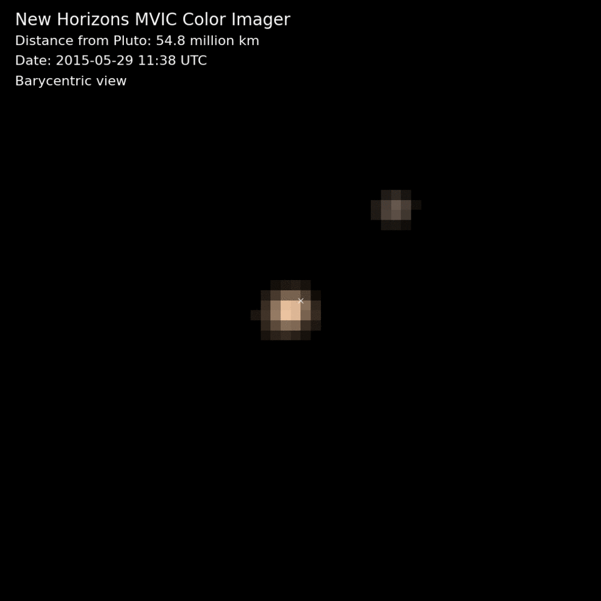
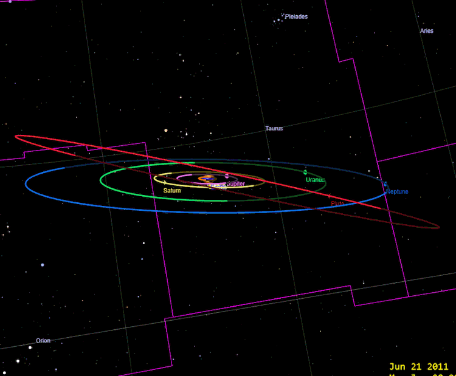

Chapter 3 Gifs
-

Charon Orbiting Pluto -

Interstellar Comet Orbits - Semi-Major Axis and Eccentricity (GIF missing)
- Distance and Eccentricity (GIF missing)
-
 Kepler's First Law, Velocity
Kepler's First Law, Velocity
- Kepler's Second Law, Simulation (GIF missing)
- Kepler's Second Law, Graph (GIF missing)
-
 Orbit Views of Our Solar System
Orbit Views of Our Solar System